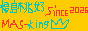

🛡️🖼️
画像をタップまたはドラッグ＆ドロップ
画像ファイル / .mask プロジェクトファイル / Ctrl+V 貼り付け対応
📖 マスキングツール「 マス王 R̄ 」の使い方
1. 基本操作・画像読み込み・.maskファイル
- 画像の追加: 画面中央タップ、ドラッグ＆ドロップ、または Ctrl+V で即座に展開。
- カメラで写真を取ってすぐ加工:撮影ボタンをおし被写体を取るだけですぐ加工できる
- 📦 .mask 保存 / 📂 .mask 読込: 作業中の全画像・全履歴・スタミナ・設定・マウスストーカー位置を独自の
data.mask（JSON形式）として手元に書き出し・復元可能。 - 📱 スマホ最適化: 2本指ピンチで拡大縮小、パン移動、1本指での滑らかな高速マスキングに対応。
2. 隠す・塗る・ぼかす・消す（マスキング＆復元）
- 🎨 カラー塗り: カラーピッカーやスポイトで選択した好きな色で四角く塗りつぶし。
- ⭕ 円形マスク（🎨 カラーピッカー＆スポイト連動）: 好きな色や画像から抽出した色で丸型に塗りつぶし。
- 🧹 消しゴム（選択復元）: ドラッグした範囲の加工を消去し、元画像のピクセルを綺麗に元通り復元。
- 🔀 選択移動: 囲んだ部分を切り抜いて/コピーしてドラッグ移動し、別の場所に一発配置。
- 黒塗り / 白塗り / モザイク / すりガラス / ぼかし / スポットライト: スライダーで強度やサイズを自在に調整可能。
- 境界ぼかし（フェザー）: チェックを入れるとマスクの四隅の境目を自然になじませます。
- センシティブシールド:グロ画像を自動で検知して、厚めのモザイクをかけます。api不使用です
3. 注釈・ハイライト・ダミー置換
- ダミー置換: 氏名・電話番号・メール・住所などをリアルなダミー文字で自然に上書き。指やマウスで直感ドラッグ移動して確定。
- 枠 / 矢印: カラーピッカーで選んだ色でフレームや矢印を描画。
- 連番スタンプ: タップするたびに ① ② ③ と自動カウントアップ。
- 文字入れ / 蛍光ペン / スポイト: 自由テキスト配置、半透明マーカー、色抽出塗りつぶし。
4. 高度な編集・一括処理・保存
- 定型マスク: マイナンバーカード・免許証・保険証の個人情報位置を一発一括マスキング。
- 透かし文字 / トリミング / 回転 / リサイズ: 「社外秘」刻印やサイズ変更に対応。
- 超軽量 WebP / AVIF 一括コンバーター＆圧縮機: 重たいPNGやJPEGをドラッグするだけで、画質を保ったままファイルサイズを1/10に一括圧縮。
5.Gitの仕組みを活用
- 自動コミット 操作が自動的にすべて履歴ツリーにコミットされます。
- 簡単に復元可能 コミットを押すと、そのコミットの操作に復元できます
- maskに自動保存/ブランチ作成可能 '.maskにもしっかり履歴ツリーが保存できます。ブランチも作れます
🔗 管理人おすすめ Link集
👑 マス王 R̄ 公式バナー（リンクフリー）
当サイトはリンクフリーです。Webサイトやブログでのご紹介大歓迎です！（直リンク推奨・保存してお持ち帰りも可）

👑 マス王 R̄ 88x31';">
🛡️ 完全ローカル・サーバー送信ゼロの神ツール
🔐 プライバシー保護・セキュリティ情報
- Electronic Frontier Foundation (EFF) - デジタル世界におけるユーザーのプライバシーと自由を守る国際NPO。
- 個人情報保護委員会 - マイナンバーや本人確認書類の安全な取り扱いガイドライン公式。
🍑 福島県 ＆ 美味しいモモ愛好リンク
- ふくしまの旅 (福島県観光復興推進委員会) - 管理人おすすめ！くだもの王国・福島の観光と果物狩り情報。
- JAふくしま未来 - 「あかつき」「まどか」「川中島白桃」など甘くてジューシーな福島の桃公式情報。
HTML関連リンク
- HTML小技集 HTMLとjsだけでできるギミックがたくさん載っているサイトです
🕒 更新履歴 (Changelog)
ページ:
/ 1 (0件)
👤 開発者プロフィール
🍑
福島 桃好
マス王 R̄ 開発者| 🍑 名前の由来 | 福島のモモが好き ＝「福島 桃好」を台湾語読みした名前 |
| 🇯🇵 国籍 | 日本 |
| 🎂 生年月日 | 6月7日 |
| ♂️ 性別 | 雄 |
| 💻 趣味 | サイト更新 |
💬 ひとこと
「完全ローカル・サーバー送信ゼロ」で誰でも安全に使えるWebツールを目指して日々サイト更新しています！
「私たちは、たゆまず善を行いましょう。飽きずにいれば、時が来て刈り取ることになります。」
── ガラテヤ人への手紙 6章9節継続は力なりです。あきらめずに10年,20年と続けていきたいです！
🌱 サイト開設からの歩み
経過日数: 0 日
経過分数: 0 分
経過秒数: 0 秒